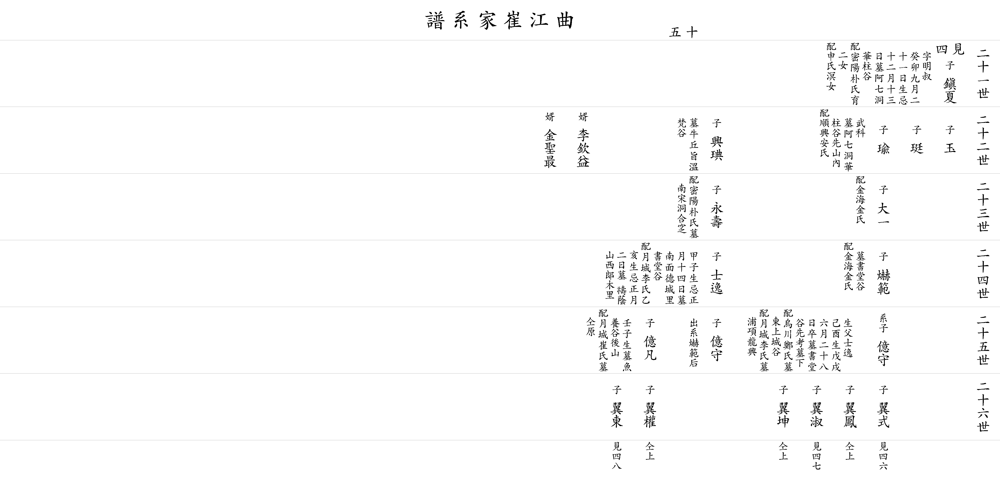

| 곡 강 최 가 계 보 |
| 이전☜ 쪽 15 ☞다음 |
| 21세 |
▲ 진하 鎭夏 |
아버지 만재(萬載) 의 셋째 아들 자 명숙(明叔) 1723(癸卯)년 9월21일생 제삿날 12월13일 묘 아칠동 화주곡(阿七洞 華柱谷) 할머니 밀양박씨 따님 두분을 낳아 기르심 둘째 할머니 신씨 명(溟)의 따님 사위 이흠익(李欽益) 사위 김성최(金聖最) |
|||||||||||
| 22세 |
옥 玉 △ |
정 珽 △ |
유 瑜 |
무과(武科) 묘 아칠동 화주곡 선산 할머니 순흥안씨 |
흥전 興琠 |
묘 우구지 온범곡(牛丘旨 溫梵谷) | |||||||
| 23세 |
대일 大一 |
할머니 김해김씨 |
영수 永壽 |
할머니 밀양박씨 묘 남송동 합장 |
|||||||||
| 24세 |
혁범 爀範 |
묘 서당골(書堂谷) 할머니 김해김씨 |
사일 士逸 |
1804(甲子)년생 제삿날 1월14일 묘 남면 덕성리 서당골(書堂谷) 할머니 월성이씨 1815(乙亥)년생 제삿날 1월 2일 묘 도음산 서낭목리(禱蔭山 西郞木里) |
|||||||||
| 25세 |
계자 억수 億守 |
생부 사일(士逸) 1849(己酉)생 1898(戊戌)년 6월28일 별세 묘 서당골 아버지묘 아래 큰 할머니 오천정씨 묘 동상성골(東上城谷) 둘째 할머니 월성이씨 묘 포항시 용흥동 |
억수 億守 |
혁범(爀範)의 후계을 이음 |
억범 億凡 |
1852(壬子)년생 묘 어양골(魚養谷) 뒷산 할머니 월성최씨 묘 할아버지와 같은 곳 |
|||||||
| 26세 |
익식 翼式 ▼ |
익봉 翼鳳 ▼ |
익숙 翼淑 ▼ |
익곤 翼坤 ▼ |
익권 翼權 ▼ |
익동 翼東 ▼ |
|||||||
| 이전☜ 쪽 15 ☞다음 |
|  |